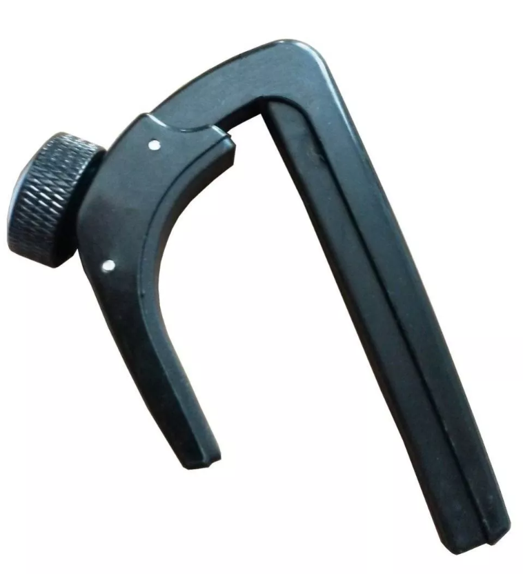

Capo CAROLINA

Descripción
El capo CAROLINA es un accesorio diseñado para colocarse sobre el mástil de la guitarra y facilitar el cambio de tonalidad sin necesidad de modificar la afinación.
Su tamaño reducido permite llevarlo cómodamente y utilizarlo tanto con guitarras acústicas como con guitarras clásicas.
Características
| Características | Especificación |
|---|---|
| Tipo | Capo para guitarra |
| Material | Metal |
| Color | Negro |